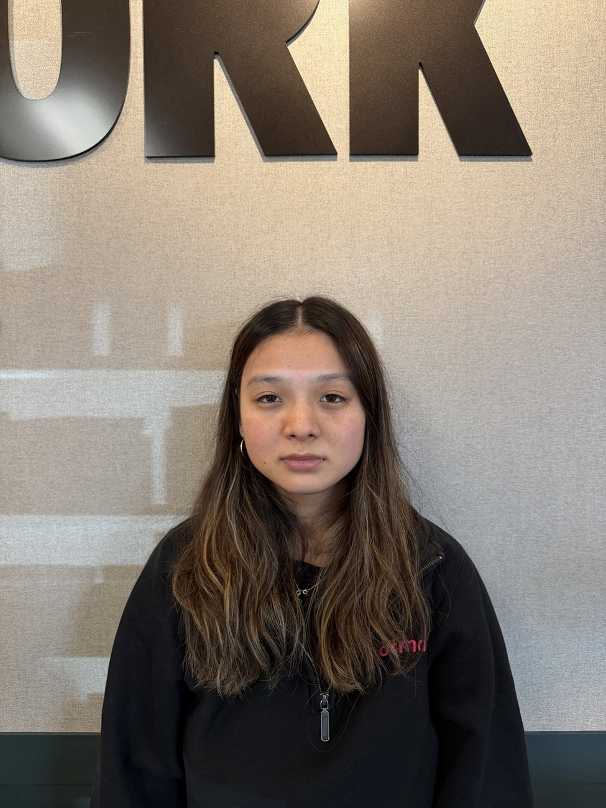
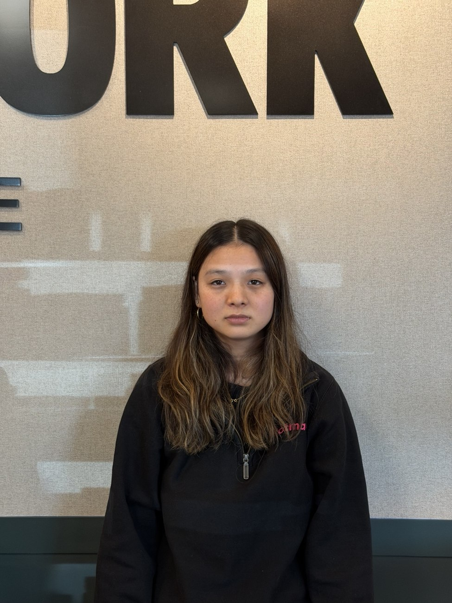
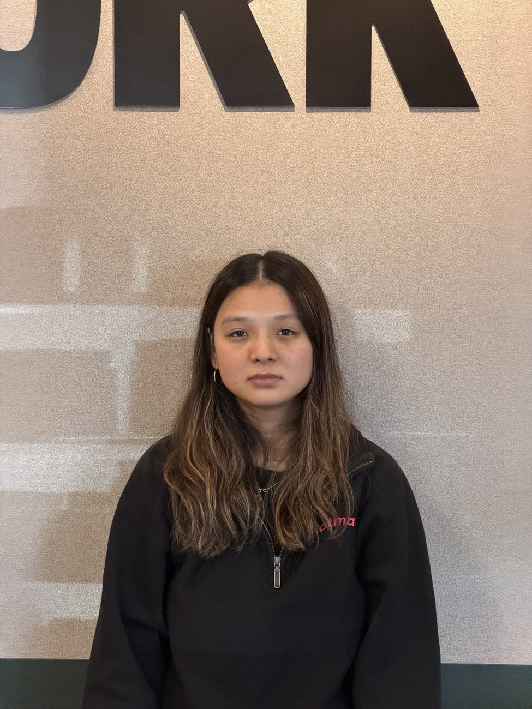
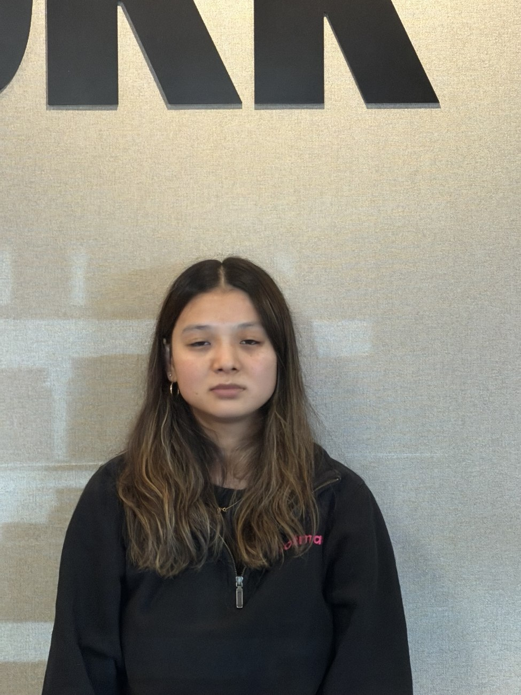
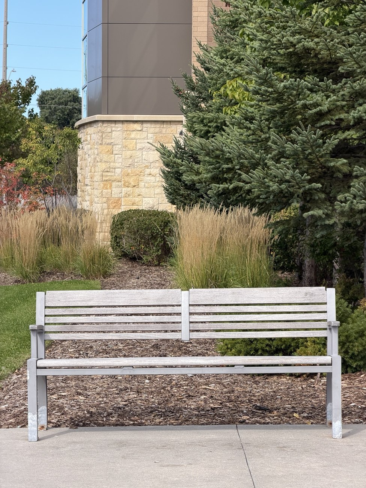
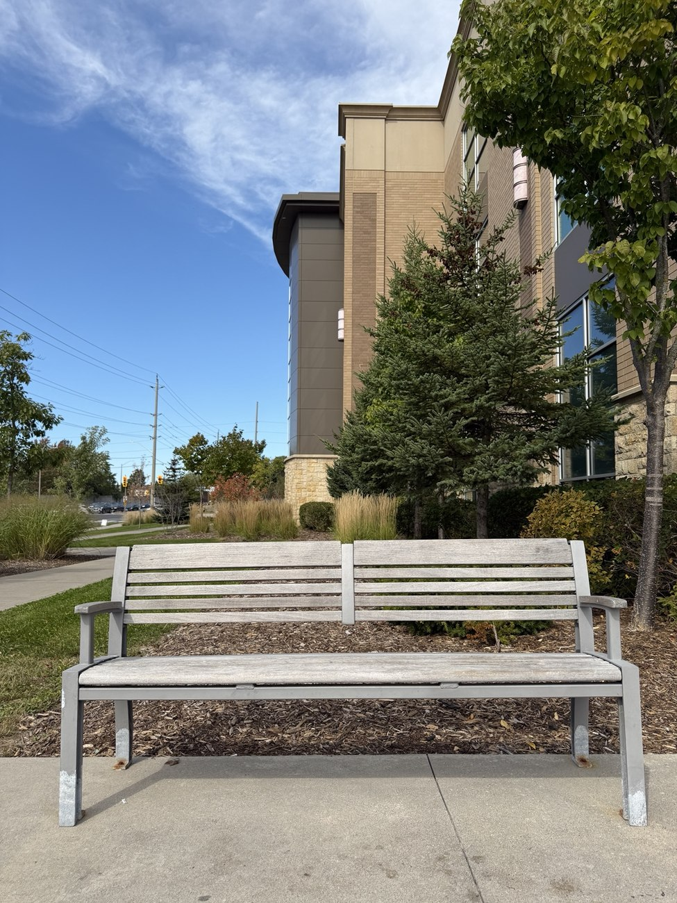

Serena Beddoe
For the first portrait I stood close to the subject and used the lowest zoom. I then stepped back and increased the zoom for each photo. The face stays about the same size across Images 1 to 5.




The close image makes features nearer the lens look a little larger relative to the rest of the face. Image size is proportional to focal length divided by distance. When the camera is close, the difference in distance from the lens to the nose and the ears is a larger fraction of the total distance. Stepping back reduces that difference in the projected face. Zoom brings the face back to about the same size, but it does not undo the change in perspective.
The facial change is subtle here. The background letters make the change in framing easier to see.
I took Image 1 from farther away at 4x. I then moved toward the bench and took Image 2 at 1x. The bench is roughly the same width in both photos.


In Image 1 the tree and building look larger relative to the bench. The distant parts of the scene seem closer to the bench than they do in Image 2. The ratio between the distance to the bench and the distance to the background gets closer to one as the camera moves back. That makes their projected sizes more similar. The 4x zoom keeps the bench large in the frame, but the camera position is what changes the perspective. Image 2 also shows more sky and walkway because it uses the wider 1x view.
The bottle is the foreground subject for this shot. The camera moves back while the zoom increases, with the bottle kept near the same size in the frame. The background changes its size relative to the bottle.
The camera model gives an approximate image height of fH/Z for an object of height H, distance Z and focal length f. Increasing both f and Z can keep f/Z almost constant for the bottle. The background is farther away, so its distance changes by a different proportion. Its apparent size changes even when the bottle stays roughly fixed.